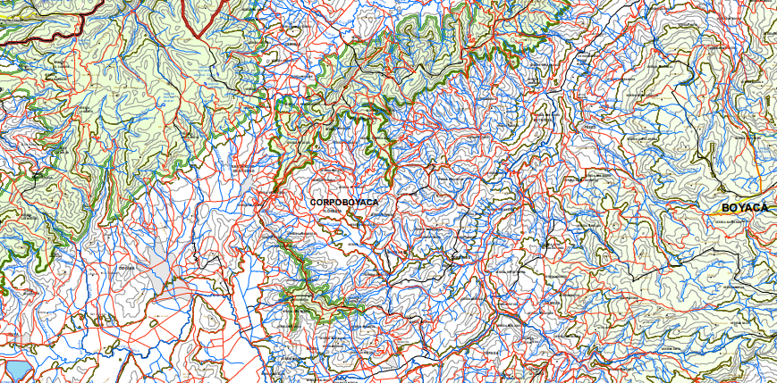

Ubicación:
El Páramo de La Rusia hace parte de una zona protegida llamada “Complejo Páramo Guantiva- La Rusia”, que tiene 119,750 hectáreas protegidas divididas entre los departamentos de Boyacá y Santander (sostenible & Humboldt, 2012); En la parte de Boyacá (Donde vivo), el páramo colinda con los municipios de Duitama, Paipa, Santa Rosa de Viterbo, Cerinza, entre otros (…).

Una parte del mapa del páramo de la rusia | Imagen cortesía del Instituto Humboldt 2012
Ahora, hablando más de su espacio físico, me enfocaré principalmente en el sector asociado al municipio de Duitama Boyacá, pues es el lugar donde vivo y conozco más.
Espacio:
El páramo es un lugar frío, con altitudes que oscilan entre los 3000 y 4000 msnm. Así mismo, según el Instituto Humboldt la mayor parte de su superficie se compone de vegetación “herbácea y/o arbustiva” (sostenible & Humboldt, 2012), mientras que el resto se divide entre bosques y áreas para el cultivo.En el área que colinda con Duitama, encontramos la carretera Duitama-Charalá, que atraviesa el páramo, y va hasta el departamento de Santander. Primeramente, cuando iniciamos el ascenso vamos a encontrar una vereda llamada Santa Ana. Después de pasar esta, empezaremos a ver el páramo más de cerca con su característica sensación térmica y sus tradicionales frailejones y lagunas.

Carretera a Charalá Santander | Imagen propia